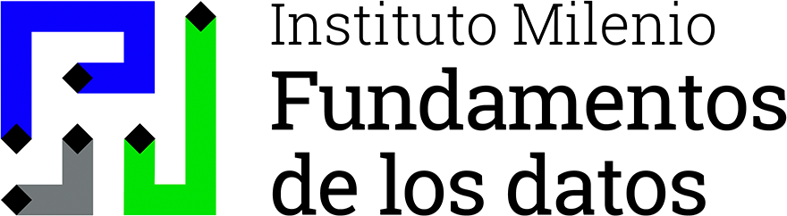

Analyzing Scientific Trajectories With Graphs and Natural Language Processing
Friday 13 November 2026 · Arequipa, Peru · Universidad de San Pablo

Chile funds advanced human capital.
Its records cannot answer the follow-up questions about the results of
that funding: who entered science, with whom, where, and what came of it.
BERTopic: 26,071 abstracts → 237 topics
| Community | Fellows | Female | Q1 | High GSE |
|---|---|---|---|---|
| Immune cell biology | 59 | 37.3% | 86.7% | 27.1% |
| Synthesis & structure | 58 | 34.5% | 83.2% | 27.6% |
| Salmon genomics | 49 | 49.0% | 85.0% | 26.5% |
| C. difficile infection | 33 | 48.5% | 87.0% | 6.1% |
| Clinical methods | 31 | 54.8% | 85.5% | 29.0% |
| Neuroscience | 31 | 48.4% | 90.5% | 22.6% |
Louvain communities · Neo4j GDS · the 496-node component
Next: full co-authorship, regional and institutional cuts, causal designs.
Schematic render of the co-author field.